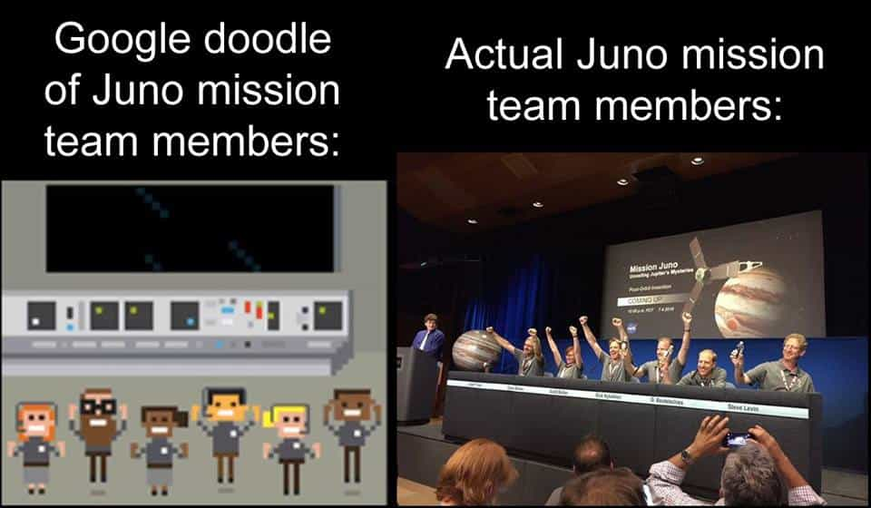

< < < Back
Google’s Anti-White Sketch Of The Juno Mission Team Shows How Evil The Company Has Become – Return Of Kings
It’s probably a good thing that Google got rid of its longtime slogan, “Don’t be evil,” because the company’s been working around the clock on that front for years. Case in point: earlier this week, following NASA’s successful mission to send the Juno spacecraft to Jupiter, Google released a “celebratory” sketch that whitewashed (blackwashed) the ethnicity of the Juno mission team members:

Had Google depicted a group of non-whites as white, the left would have gone apoplectic with fury. In fact, right now there’s a controversy brewing over the upcoming live-action adaptation of Ghost in the Shell, in which white actress Scarlett Johansson was cast as a Japanese character. However, falsely depicting a team of white men as a multiethnic, multigender team is apparently acceptable.
This is yet another example of how Google is using its power as the world’s largest search engine to force a leftist agenda on all of us. Google has steadily worked to erode the privacy of Internet users while simultaneously trying to manipulate reality in order to boost support for the Democratic Party and leftist political causes. Anyone who uses Google’s services in any way should be aware of their actions.
Examples Of Google’s Evil
While Google has been a supporter of the left for years—both of Google’s founders, Sergey Brin and Larry Page, are Democrats, as are much of the site’s employees—the site’s political advocacy has become ridiculously overt in the past year. For example, YouTube channel SourceFed discovered last month that Google had been manipulating its search results to favor Democratic nominee Hillary Clinton. Google’s autocomplete would bury suggestions for searches on Hillary’s various corruption scandals while working normally for her rivals Donald Trump and Bernie Sanders:
https://youtu.be/PFxFRqNmXKg
Additionally, Google and YouTube have been trying to no-platform Return of Kings contributor Davis Aurini for several months now. Back in March, YouTube shut down Aurini’s channel for supposed “violations” of their Terms of Service, then reinstated him after a public backlash. He recently became the victim of a false copyright strike for his review of the film Tombstone, and has been banned from uploading videos longer than 15 minutes as a result.
Google has also been a pioneer in violating the privacy of its users. For example, if you’re a user of Chrome, Google is surreptitiously turning on your microphone and using it to record your voice. Virtually every Google product, from Gmail to Android phones to Google Maps, secretly hoovers up all the data entered into it and spreads it to Google without your knowledge or consent.
More insidiously, Google has been steadily working to destroy online anonymity: former CEO Eric Schmidt has stated multiple times that anonymity on the Internet is “dangerous” and will soon be a thing of the past. Anonymity is the tool by which many dissident writers and bloggers can express their views without worrying about losing their jobs or being publicly pilloried by leftists. Anonymity is also an important tool for writers fighting authoritarian governments; Google’s erosion of online privacy will aid tyrants and effectively make it impossible to advocate for conservative, neomasculine values.
The Online Hydra

Google’s sheer dominance of the Internet—from email to video sharing to data analytics—makes breaking free of its clutches relatively difficult. I myself make use of Google’s services extensively because they’re convenient, easy-to-use and free. The problem is that Google’s products come with a hefty price tag: empowering a corporation whose values are antithetical to your own.
I’ve extricated myself from the Google hydra in some ways; for example, I’ve switched to using Pale Moon as my browser because it’s faster, hogs less resources and doesn’t spy on me. However, we need to search for ways to get the Google monkey off our backs. We cannot continue enriching a corporation who uses its heft to advocate for everything we oppose.
 If you like this article and are concerned about the future of the Western world, check out Roosh's book Free Speech Isn't Free. It gives an inside look to how the globalist establishment is attempting to marginalize masculine men with a leftist agenda that promotes censorship, feminism, and sterility. It also shares key knowledge and tools that you can use to defend yourself against social justice attacks. Click here to learn more about the book. Your support will help maintain our operation.
If you like this article and are concerned about the future of the Western world, check out Roosh's book Free Speech Isn't Free. It gives an inside look to how the globalist establishment is attempting to marginalize masculine men with a leftist agenda that promotes censorship, feminism, and sterility. It also shares key knowledge and tools that you can use to defend yourself against social justice attacks. Click here to learn more about the book. Your support will help maintain our operation.
Read More: How History Shows Us The Evil Of Western Masochism